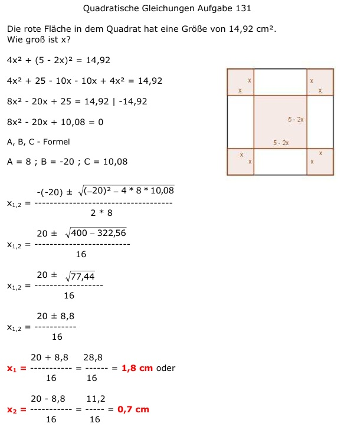

Aufgabe 131
Die rote Fläche in dem Quadrat hat eine Größe
von 14,92 cm2.
Wie groß ist x?

4x2 + (5 - 2x)2 = 14,92
4x2 + 25 - 10x - 10x + 4x2 = 14,92
8x2 - 20x + 25 = 14,92 |-14,92
8x2 - 20x + 10,08 = 0
A, B, C - Formel
A = 8 ; B = -20 ; C = 10,08
 20 ± 8,8
x1,2 = ----------
16
20 + 8,8 28,8
x1 = ----------- = ------ = 1,8 cm oder
16 16
20 - 8,8 11,2
x2 = ---------- = ------ = 0,7 cm
16 16
20 ± 8,8
x1,2 = ----------
16
20 + 8,8 28,8
x1 = ----------- = ------ = 1,8 cm oder
16 16
20 - 8,8 11,2
x2 = ---------- = ------ = 0,7 cm
16 16